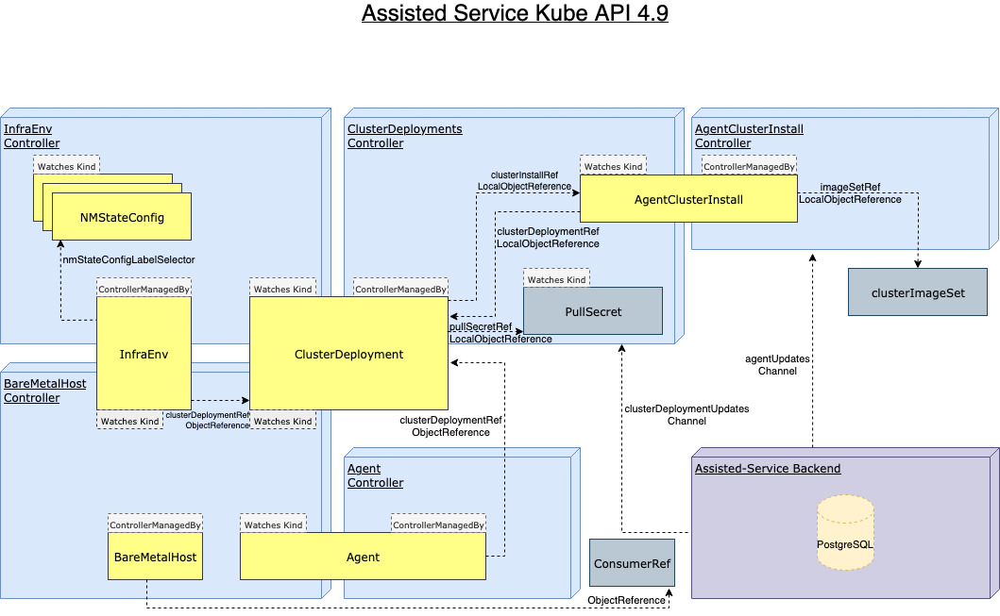

Hive Integration
The goal of the Hive integration is to enable Assisted Installer capabilities on-premise in users' "Hub" clusters by installing clusters via Multi-cluster management, such as through Hive and RHACM (Red Hat Advanced Cluster Management).
A full description of the enhancement is available here.
For this integration, the Assisted Installer APIs are available via CRDs
CRD Types

ClusterDeployment
The ClusterDeployment CRD is an API provided by Hive.
See Hive documentation here.
The ClusterDeployment can have a reference to an AgentClusterInstall (Spec.ClusterInstallRef) that defines the required parameters of the Cluster.
Deletion of ClusterDeployment will trigger the clusterdeployments.agent-install.openshift.io/ai-deprovision finalizer pre-deletion logic, which will delete the referenced AgentClusterInstall.
AgentClusterInstall
In the AgentClusterInstall, the user can specify requirements like Networking, number of Control Plane and Worker nodes and more.
The installation will start automatically if the required number of hosts is available, the hosts are ready to be installed and the Agents are approved.
Once the installation started, changes to the AgentClusterInstall Spec will be revoked.
Selecting a specific OCP release version is done using a ClusterImageSet, see documentation here.
The AgentClusterInstall reflects the Cluster/Installation status through Conditions.
Deletion of AgentClusterInstall will trigger the agentclusterinstall
.agent-install.openshift.io/ai-deprovision finalizer pre-deletion logic, which will deregister the backend cluster and delete all the related Agent CRs.
Here an example how to print AgentClusterInstall conditions:
$ kubectl get agentclusterinstalls.extensions.hive.openshift.io -n mynamespace -o=jsonpath='{range .items[*]}{"\n"}{.metadata.name}{"\n"}{range .status.conditions[*]}{.type}{"\t"}{.message}{"\n"}{end}'
test-infra-agent-cluster-install
SpecSynced The Spec has been successfully applied
Validated The cluster's validations are passing
RequirementsMet The cluster installation stopped
Completed The installation has completed: Cluster is installed
Failed The installation has not failed
Stopped The installation has stopped because it completed successfully
More details on conditions is available here
Debug Information
The DebugInfo field under Status provides additional information for debugging installation process:
- EventsURL specifies an HTTP/S URL that contains events occured during cluster installation process
InfraEnv
The InfraEnv CRD represents the configuration needed to create the discovery ISO. The user can specify proxy settings, ignition overrides and specify NMState labels.
When the ISO is ready, an URL will be available in the CR.
The InfraEnv reflects the image creation status through Conditions.
More details on conditions is available here
The InfraEnv can be created without a Cluster Deployment reference for late binding flow. More information is available here.
NMStateConfig
The NMStateConfig contains network configuration that will applied on the hosts. See NMState repository here.
To link between an InfraEnv to NMState (either one or more):
- InfraEnv CR: add a label to nmStateConfigLabelSelector with a user defined name and value.
- NMState CR: Specify the same label + value in Object metadata.
Upon InfraEnv creation, the InfraEnv controller will search by label+value for matching NMState resources and construct a config to be sent as StaticNetworkConfig as a part of ImageCreateParams. The backend does all validations, and currently, there is no handling of configuration conflicts (e.g., two nmstate resources using the same MAC address).
The InfraEnv controller will watch for NMState config creation/changes and search for corresponding InfraEnv resources to reconcile since we need to regenerate the image for those.
:warning: It is advised to create all NMStateConfigs resources before their corresponding InfraEnv. The reason is that InfraEnv doesn't have a way to know how many NMStateConfigs to expect; therefore, it re-creates its ISO when new NMStateConfigs are found. The new ISO automatically propagates to any agents that haven't yet started installing.
Agent
The Agent CRD represents a Host that boot from an ISO and registered to a cluster. It will be created by Assisted Service when a host registers. In the Agent, the user can specify the hostname, role, installation disk and more. Also, the host hardware inventory and statuses are available.
Note that if the Agent is not Approved, it will not be part of the installation.
Here how to approve an Agent:
$ kubectl -n mynamespace patch agents.agent-install.openshift.io 120af504-d88e-46bd-bec2-b8b261db3b01 -p '{"spec":{"approved":true}}' --type merge
The Agent reflects the Host status through Conditions.
More details on conditions is available here
Here an example how to print Agent conditions:
$ kubectl get agents.agent-install.openshift.io -n mynamespace -o=jsonpath='{range .items[*]}{"\n"}{.spec.clusterDeploymentName.name}{"\n"}{.status.inventory.hostname}{"\n"}{range .status.conditions[*]}{.type}{"\t"}{.message}{"\n"}{end}'
test-infra-cluster-assisted-installer
test-infra-cluster-assisted-installer-master-2
SpecSynced The Spec has been successfully applied
Connected The agent's connection to the installation service is unimpaired
RequirementsMet Installation already started and is in progress
Validated The agent's validations are passing
Installed The installation is in progress: Configuring
test-infra-cluster-assisted-installer
test-infra-cluster-assisted-installer-master-0
SpecSynced The Spec has been successfully applied
Connected The agent's connection to the installation service is unimpaired
RequirementsMet Installation already started and is in progress
Validated The agent's validations are passing
Installed The installation is in progress: Configuring
test-infra-cluster-assisted-installer
test-infra-cluster-assisted-installer-master-1
SpecSynced The Spec has been successfully applied
Connected The agent's connection to the installation service is unimpaired
RequirementsMet Installation already started and is in progress
Validated The agent's validations are passing
Installed The installation is in progress: Waiting for control plane
Once the cluster is installed, the ClusterDeployment is set to Installed and secrets for kubeconfig and credentials are created and referenced in the AgentClusterInstall.
Day 2 worker
In case of none SNO deployment, after that the cluster is installed, the original cluster is deleted and a Day 2 cluster is created instead in the Assisted Service database.
Additional nodes can be added by booting from the new generated ISO. Each additional host will start installation once the Agent is Approved and the Host is in known state.
Note that the user needs to approved the additional nodes in the installed cluster.
Bare Metal Operator Integration
In case that the Bare Metal Operator is installed, the Baremetal Agent Controller will sync between the Agent CR and the matching BareMetalHost CR:
- Find the right pairs of BMH/Agent using their MAC addresses
- Set the Image.URL in the BMH copying it from the InfraEnv's status.
- Reconcile the Agent's spec by copying the following attributes from the BMH's annotations:
- Role: master/worker
- Hostname (optional for user to set)
- MachineConfigPool (optional for user to set)
- Reconcile the BareMetalHost hardware details by copying the Agent's inventory data to the BMH's
hardwaredetailsannotation.
See BMAC documentation here.
Working with mirror registry
In case all of your images are in mirror registries, the service, discovery ISO, and installed nodes must be configured with the proper registries.conf and authentication certificate. To do so, see the Mirror Registry Configuration section here.
Assisted Installer Kube API CR examples
docs/hive-integration/crds stores working examples of various resources we spawn via kube-api in assisted-installer, for Hive integration. Those examples are here for reference.
You will likely need to adapt those for your own needs.
- InfraEnv
- InfraEnv Late Binding
- NMState Config
- Hive PullSecret Secret
- Hive ClusterDeployment
- AgentClusterInstall
- AgentClusterInstall SNO
Creating InstallConfig overrides
In order to alter the default install config yaml used when running openshift-install create commands.
More information about install-config overrides is available here
In case of failure to apply the overrides the agentclusterinstall conditions will reflect the error and show the relevant error message.
Add an annotation with the desired options, the clusterdeployment controller will update the install config yaml with the annotation value. Note that this configuration must be applied prior to starting the installation
$ kubectl annotate agentclusterinstalls.extensions.hive.openshift.io test-cluster -n mynamespace agent-install.openshift.io/install-config-overrides="{\"networking\":{\"networkType\": \"OVNKubernetes\"},\"fips\":true}"
agentclusterinstalls.extensions.hive.openshift.io/test-cluster annotated
$ kubectl get agentclusterinstalls.extensions.hive.openshift.io test-cluster -n mynamespace -o yaml
apiVersion: extensions.hive.openshift.io/v1beta1
kind: AgentClusterInstall
metadata:
annotations:
agent-install.openshift.io/install-config-overrides: '{"networking":{"networkType": "OVNKubernetes"},"fips":true}'
creationTimestamp: "2021-04-01T07:04:49Z"
generation: 1
name: test-cluster
namespace: mynamespace
resourceVersion: "183201"
...
Creating host installer args overrides
In order to alter the default coreos-installer arguments used when running coreos-installeropenshift-install create command.
List of supported args can be found here
In case of failure to apply the overrides the agent conditions will reflect the error and show the relevant error message.
Add an annotation with the desired options, the bmac controller will update the agent spec with the annotation value. Then agent controller will forward it to host configuration. Note that this configuration must be applied prior to starting the installation
$ kubectl annotate bmh openshift-worker-0 -n mynamespace bmac.agent-install.openshift.io/installer-args="[\"--append-karg\", \"ip=192.0.2.2::192.0.2.254:255.255.255.0:core0.example.com:enp1s0:none\", \"--save-partindex\", \"1\", \"-n\"]"
baremetalhost.metal3.io/openshift-worker-0 annotated
$ oc get bmh openshift-worker-0 -n mynamespace -o yaml
apiVersion: metal3.io/v1alpha1
kind: BareMetalHost
metadata:
annotations:
bmac.agent-install.openshift.io/installer-args: '["--append-karg", "ip=192.0.2.2::192.0.2.254:255.255.255.0:core0.example.com:enp1s0:none", "--save-partindex", "1", "-n"]'
creationTimestamp: "2021-04-13T10:46:57Z"
generation: 1
name: openshift-worker-0
namespace: mynamespace
spec:
Creating host ignition config overrides
In case of failure to apply the overrides, the agent conditions will reflect the error and show the relevant error message.
Add an annotation with the desired options, the bmac controller will update the agent spec with the annotation value. Then agent controller will forward it to host configuration. Note that this configuration must be applied prior to starting the installation
$ kubectl annotate bmh openshift-worker-0 -n mynamespace bmac.agent-install.openshift.io/ignition-config-overrides="{\"ignition\": {\"version\": \"3.1.0\"}, \"storage\": {\"files\": [{\"path\": \"/tmp/example\", \"contents\": {\"source\": \"data:text/plain;base64,aGVscGltdHJhcHBlZGluYXN3YWdnZXJzcGVj\"}}]}}"
baremetalhost.metal3.io/openshift-worker-0 annotated
$ oc get bmh openshift-worker-0 -n mynamespace -o yaml
apiVersion: metal3.io/v1alpha1
kind: BareMetalHost
metadata:
annotations:
bmac.agent-install.openshift.io/ignition-config-overrides: '{"ignition": {"version": "3.1.0"}, "storage": {"files": [{"path": "/tmp/example", "contents": {"source": "data:text/plain;base64,aGVscGltdHJhcHBlZGluYXN3YWdnZXJzcGVj"}}]}}'
creationTimestamp: "2021-04-14T10:46:57Z"
generation: 1
name: openshift-worker-0
namespace: mynamespace
spec:
Creating Additional manifests
In order to add custom manifests that will be added to the installation manifests generated by openshift-install create command,
user will need to create configmap with valid manifests:
kind: ConfigMap
apiVersion: v1
metadata:
name: my-baremetal-cluster-install-manifests
namespace: mynamespace
data:
99_master_kernel_arg.yaml: |
apiVersion: machineconfiguration.openshift.io/v1
kind: MachineConfig
metadata:
labels:
machineconfiguration.openshift.io/role: master
name: 99-openshift-machineconfig-master-kargs
spec:
kernelArguments:
- 'loglevel=7'`
Create/update AgentClusterInstall with field manifestsConfigMapRef:
apiVersion: extensions.hive.openshift.io/v1beta1
kind: AgentClusterInstall
metadata:
name: my-baremetal-cluster
namespace: mynamespace
spec:
manifestsConfigMapRef:
name: my-baremetal-cluster-install-manifests
If manifests provided in configmap data section will be in bad format or configmap will not exists but will be referenced we will set error in Sync condition only if cluster will be ready for installation. Changing configmap should fix the issue.
Teardown procedure
Deleting the ClusterDeployment will automatically trigger the deletion of its referenced AgentClusterInstall and the deletion of all the Agents connected to it (Unless late binding was used, see here).
Note that the installed OCP cluster, if exists, will not be affected by the deletion of the ClusterDeployment.
Deleting only the AgentClusterInstall will delete the Agents connected to it (Unless late binding was used), but the ClusterDeployment will remain.
BareMetalHost, InfraEnv, ClusterImageSet and NMStateConfig deletion will not trigger deletion of other resources.
In case that the assisted-service is not available, the deletion of ClusterDeployment, AgentClusterInstall and Agents resources will be blocked due to finalizers that are set on them.
Here an example on how to remove finalizers on a resource:
kubectl -n mynamespace patch agentclusterinstalls.extensions.hive.openshift.io my-aci -p '{"metadata":{"finalizers":null}}' --type=merge
Development
CRD update
Changes in CRDs should be made in the CRDs Go files located here. After the changes are done, the yamls need to be generated by running:
skipper make generate-all